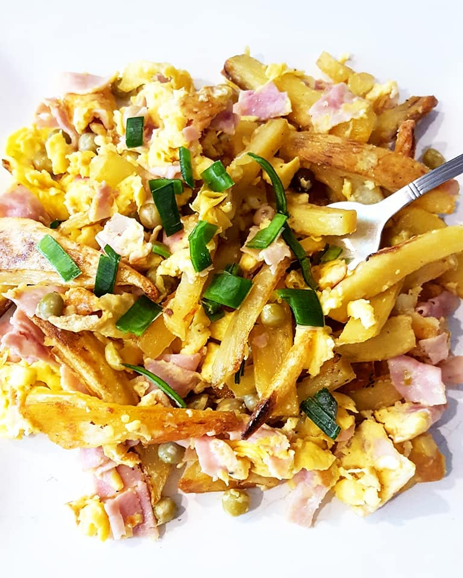

Revuelto de Gramajo

El Revuelto de Gramajo es un plato que en primeras instancias solo se compone por papas (cortadas al estilo varas), huevo y jamon.
Despues, quien cocine puede agregarle otros ingredientes como verde, arvejas, morrones, queso o mas!.
Este plato es muy conocido en los paises Argentina y Uruguaay, siendo este tradicional en las casas y restaurantes barriales. Un manjar hecho y derecho.
Ingredientes
- Papas
- Huevo
- Jamon
- Morron
- Ajo
- Setas
- Palta
Preparacion
- Lavar papas, morrones,palta, arvejas y setas
- Pelar ajo
- Cortar todo lo lavado y el jamon(mucho cuidado con la palta)
- Calentar sarten con aceite por unos minutos
- Mezclar los ingredientes con 1 o 2 huevos en un mismo recipiente
- Cocinar en la sarten revolviendo por 10-15 mins (cuidando que nada se queme y manteniendo una coccion pareja)
- Emplatar y condimentar a gusto
- A disfrutar!